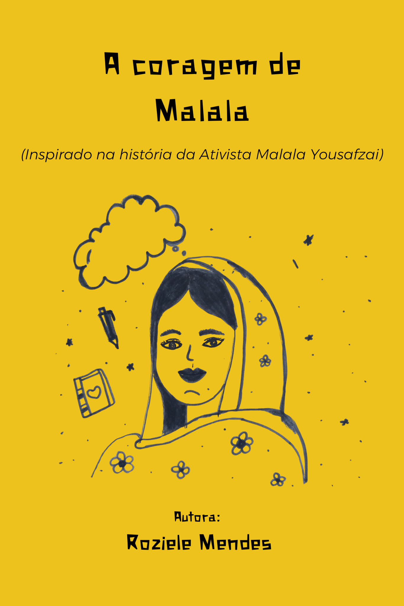

Disponível
A coragem de Malala
Este cordel foi inspirado na história de Malala Yousafzai e mostra como o desejo de estudar e defender esse direito se transformou em um verdadeiro ato de coragem e esperança diante dos desafios enfrentados pela menina paquistanesa que encantou o mundo.
Capas:
Capa selecionada: ouro
Comprar agora
Compra segura pela loja oficial da autora.